Lisa Hilligardt
Random colors
The idea is to design pairs of colors, and have them mix with each other. The principle and have a question with an answer the color is the question and the complementary color is the answer. The concept is to investigate the color and the pairings to create a harmonious and ideal visual composition. So that then in shuffle mode you create a confusion of colors with each other, and it creates other visual compositions, randomly. My object is color and the decomposition is different colors. The project is divided into 3 parts. The machine learning part, where I made the machine learn to recognize 4 colors. With the first two starts the shuffle, so the colors change randomly. With the second two colors the complementary mode starts, this mode allows the page to reload and show the complementary color compositions. The last interaction is the next which allows you to see the colors full screen, and change from one to the other.
Object
colors
Disassembled object
 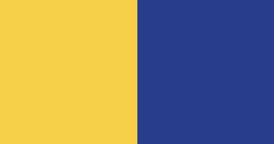
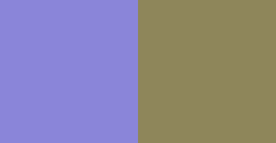
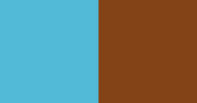
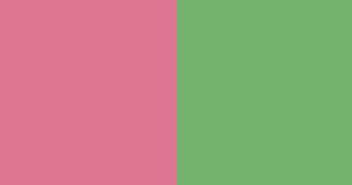
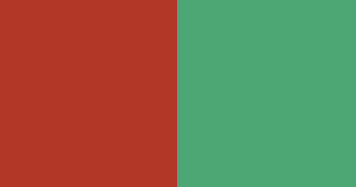
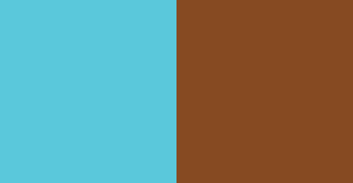
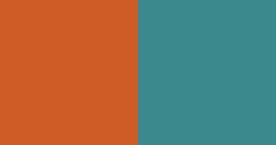
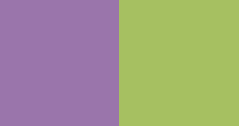
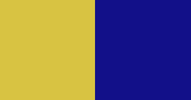
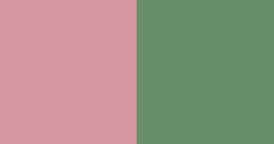
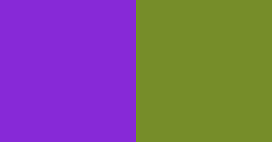
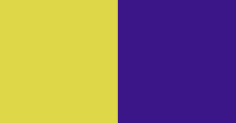
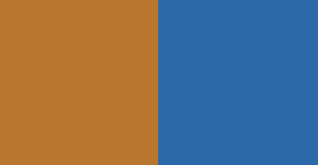
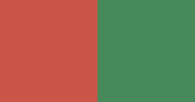
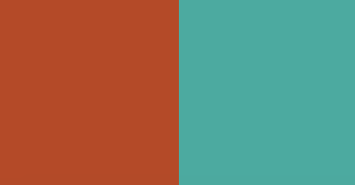
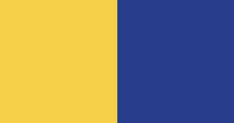
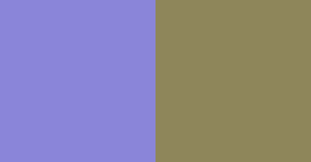
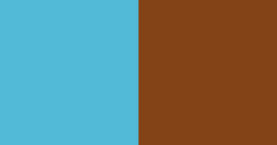
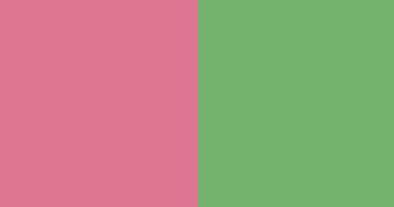
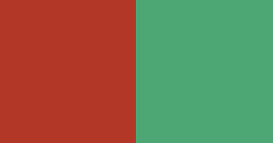
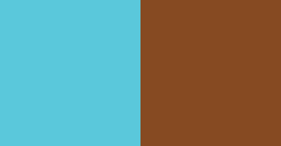
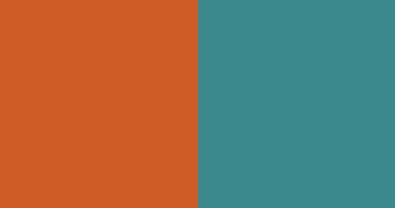
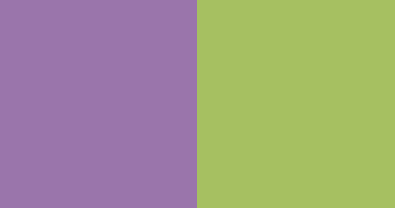
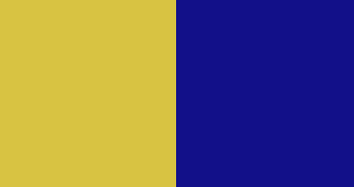
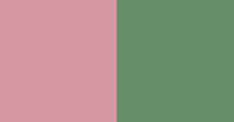
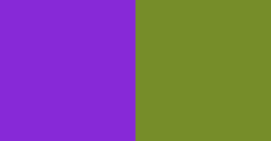
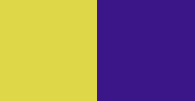
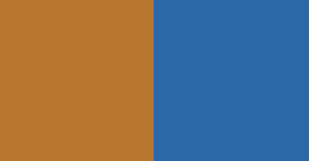
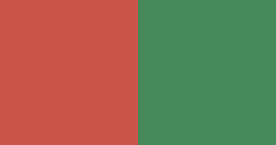
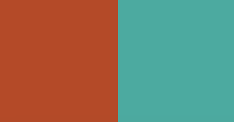
 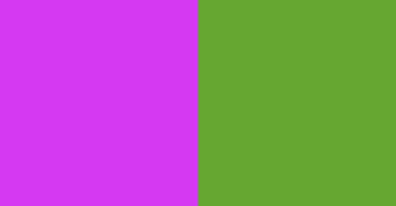
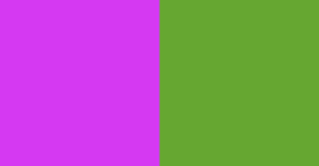
WEB PLATFORM
Full view of the 3 different interactions. I used 80 colors

4 colors, which I use to activate the two interactions
SHUFFLE
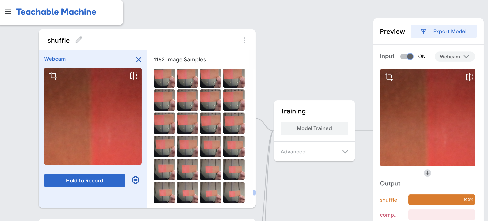I trained through the teachable machine the computer by having it show the color I chose several times, so as to train it to recognize the shuffle mode
with the shuffle mode, by showing the computer the color orange and beige, the computer recognizes the colors and starts the shuffle mode, which mixes the colors.
COMPLEMENTARE
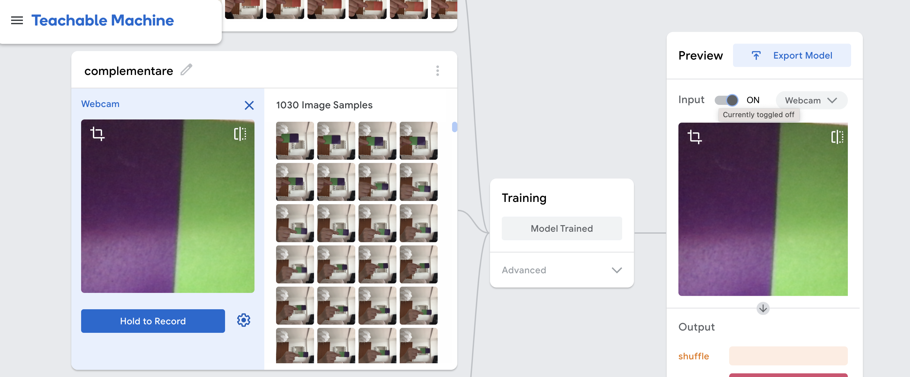I trained the computer through the Teachable Machine by having it show the color I had chosen several times, so as to train it to recognize the complementary mode.
with the complementary mode, showing the computer the colors purple and green, the computer recognizes the colors and starts the reload page mode,where the complementary colors appear.NEXT
with the next button, I have the ability to see the colors up close and change them by mashing the button.